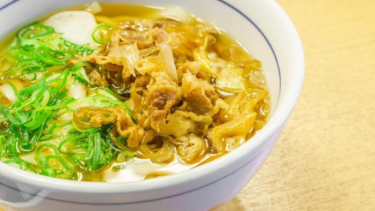
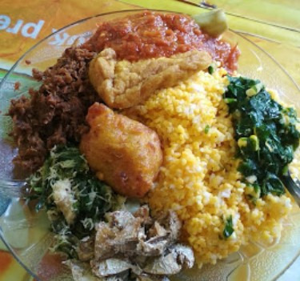
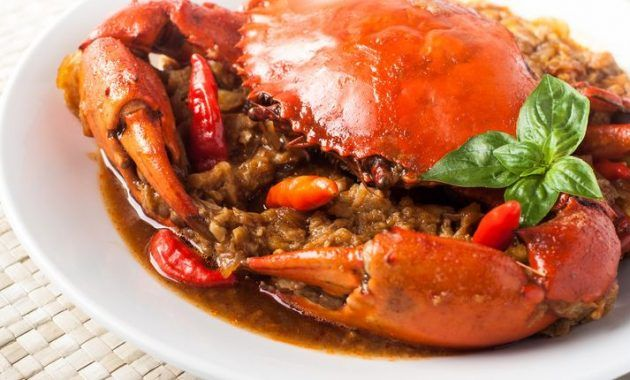
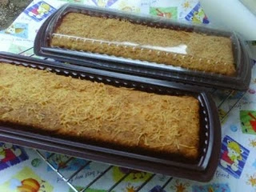

Probolinggo has so much kind of food of any types, from desserts to beverages. But I'll just show the local food of Probolinggo.
Soto Kraksaan is a chicken soup that can be found in Kraksaan District. The capital city of Probolinggo Regency.
The special thing of Soto Kraksaan is the sauce made from coconut milk which is not too thick.
Soto Kraksaan is usually served with roasted coconut powder, steamed potato slices, and shrimp crackers.
The famous Soto Kraksaan is located next to the Kraksaan Ar-Raudlah mosque and near the Kraksaan town square.

Probolinggo is also famous for its Nasi Jagung (corn rice).
Probolinggo's typical Nasi Jagung is worth a try for traditional culinary connoisseurs.
Rice Corn is a specialty that Probolinggo is proud of.
Rice Corn is often found in Probolinggo's night culinary.
One of the legendary Nasi Jagung in Probolinggo is the Nasi Jagung Merpati on
Jl. Sunan Kalijaga 77, Kecamatan Mayangan, Probolinggo.

Probolinggo's most famous food is Crab Olok.
"Olok", is a term used by the people of Probolinggo to refer to young crabs that are stranded on the beach.
Kepiting Olok is processed into delicious culinary delights that are so appetizing.
Kepiting Olok is made by steaming crabs and separating the meat from the shell.
The crab meat is then processed with a mixture of shrimp and spices and then put back into the shell.
Kepiting Olok has a delicious sweet and savory taste.

At first glance Ketan Kratok is similar to sticky rice in general.
The specialty of this sticky rice is a mixture of kratok or koro beans.
Glutinous rice is soaked, washed, and cooked with koro beans.
The sticky rice is then served with a sprinkling of grated coconut and liquid brown sugar.

Tape is a sweet cake made of slightly fermented rice or tubers.
Prol tape is a special cake made from sweet cassava tape as raw material.
Besides being made from tape, the other main ingredients are wheat flour, table salt, margarine, sugar, chicken eggs, liquid cow's milk, and cheddar cheese or a sprinkling of raisins.

This typical drink from Probolinggo, the main ingredients are ginger and cloves.
In addition to cloves and ginger, there are a number of other ingredients added such as cinnamon, pandan leaves, kaffir lime and brown sugar.
From these ingredients, the properties of increasing the body's resistance are obtained.
Mainly from the content of curcumin and gingerol in ginger.
Another benefit of this traditional drink is to cure colds, coughs, and lower cholesterol levels.